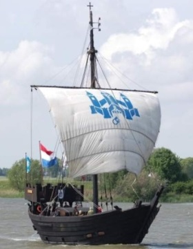

Sail is terug in Kampen
29 maart tot en met 1 april

Kom met Pasen naar Kampen en geniet van het grootste paasevenement van Nederland: Sail Kampen 2024. Water, wind, prachtige schepen, leuke attracties, muziek, theatrale historische parades, nautische demonstraties en nog veel meer.
Het belooft een fantastisch weekend te worden. Een uitje voor het hele gezin, met hopelijk veel zon!
Bron: VisitKampen.nl
Muzikale en nautische hoogstandjes tijdens Sail Kampen
Het nautisch erfgoed wordt gepresenteerd, er worden demonstraties gegeven, de Hanze geschiedenis komt tot leven en er zijn doorlopend optredens van shantykoren, straatartiesten, dweilorkesten, komieken en levende standbeelden.
Sail Kampen 2024 wordt een groots opgezet feest met muziek, theater een programma voor jong en oud en veel schepen, heel veel schepen.
Lees het volledige artikel op: Brugnieuws
Bron: VisitKampen.nl